On Wrapping Night, Dough Mino likes everything in neat rows. Then the door bursts open, and four painted gift tags blow off four wrapped parcels. Belgian-Waffle has to deliver them all by morning. Guessing isn’t good enough. Can you work out whose parcel is whose before Dough Mino does? And who is the fifth parcel for, the one that was never supposed to be part of the puzzle?
31 printed pages · 8.7 MB · A4 or US Letter. Download PDF · Open PDF to printOpens in a new tab. Use the PDF viewer's Print control.
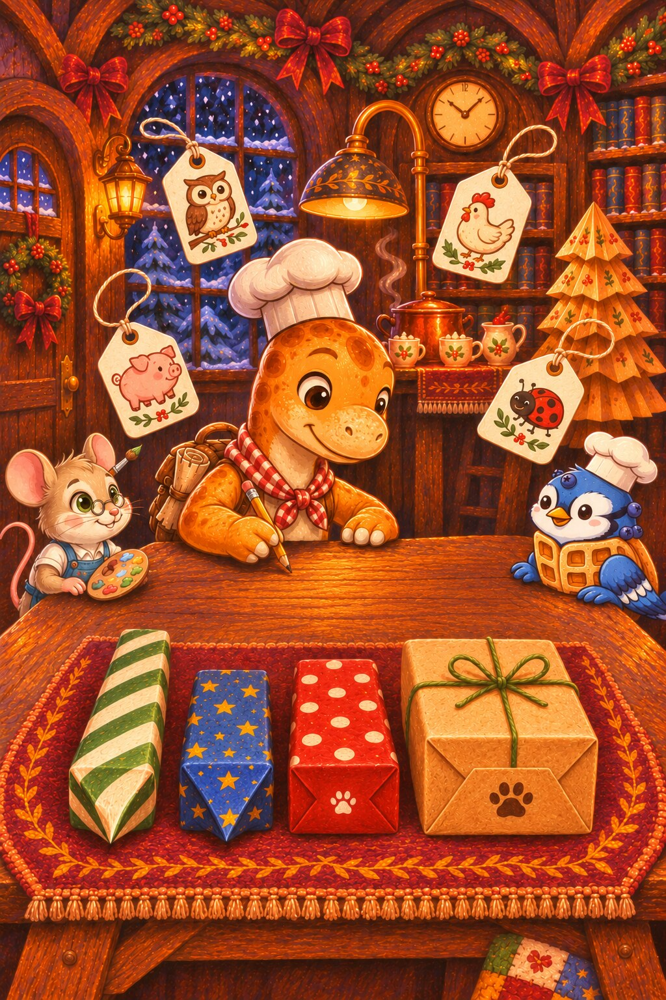
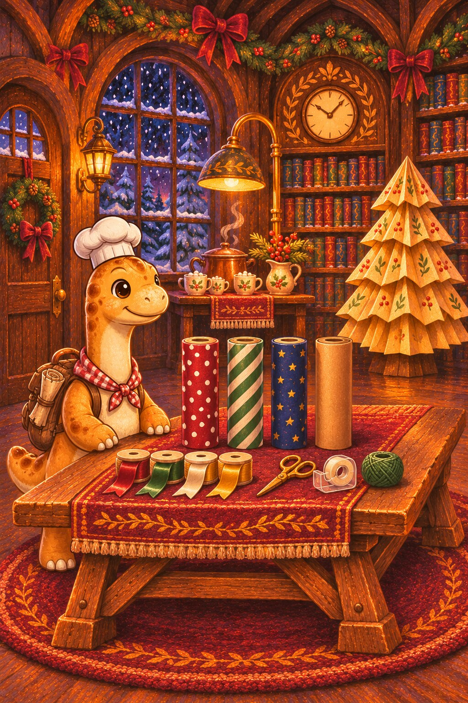
Page 1 of 30
Chapter One: Wrapping Night
Every year, on the twenty-third of December, the library hall became the Wrapping Table.
Friends brought their presents in plain boxes. The wrappers wrapped them. And before Christmas Eve morning, Belgian-Waffle delivered every single one.
This year, Dough Mino was in charge. Dough Mino loved two things more than anything: patterns, and things in neat rows.
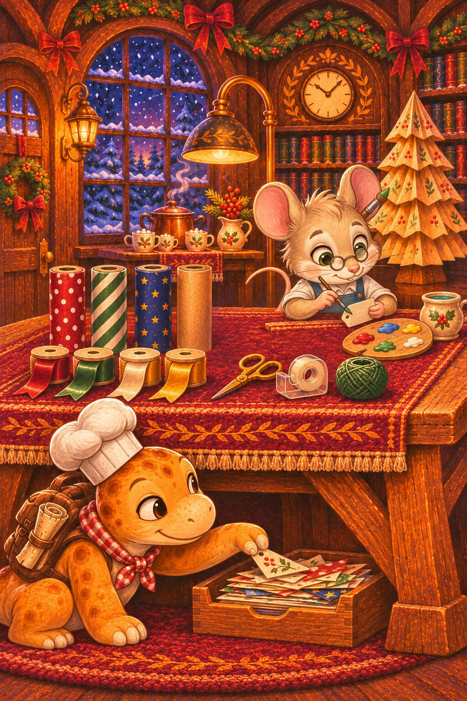
Page 2 of 30
His table was perfect. Rolls of paper in a row. Ribbons in a row. Scissors, tape and string, all in a row.
Next to him, Vincent Van Mouse painted the gift tags. On each one he painted a tiny picture of who it was for, instead of a name, because pictures were more fun.
And whenever there was a scrap of paper left over, Dough Mino tucked it into a neat pile under the table, when he thought nobody was looking.
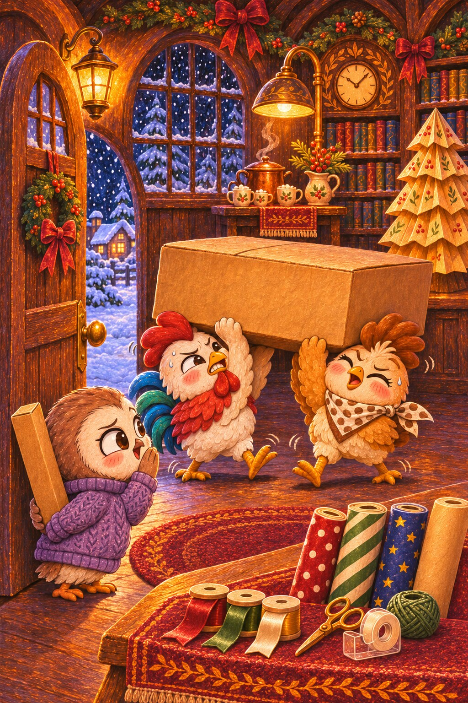
Page 3 of 30
The presents began to arrive.
Booklava brought a box for Professor Hooten. “It’s a long one,” she whispered. “Don’t let him see.”
Then Cluck O’Clock and Coop-Accino staggered in with a box for their mum, Hen-Berry. “It’s SO heavy,” puffed Cluck. “It took both of us.”
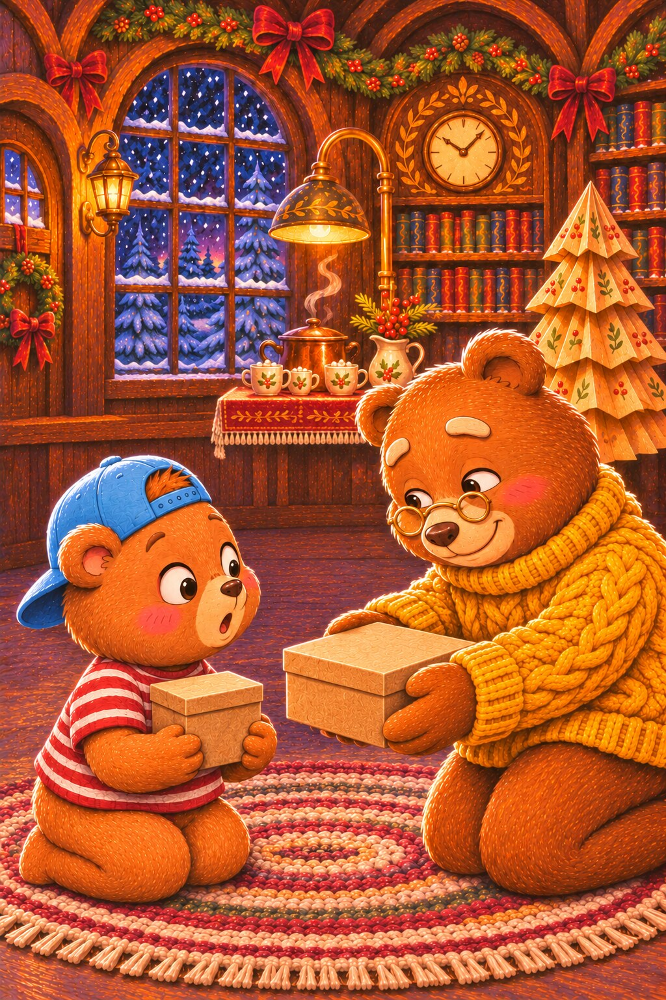
Page 4 of 30
Honey-Beats brought a small box for Pork-ulele. “Don’t shake it,” she said. “It jingles. That’ll give it away.”
Last came Ted-E-Bear with a present for Luckybug. “She’s going to love it,” he said, and smiled, and wouldn’t say any more.
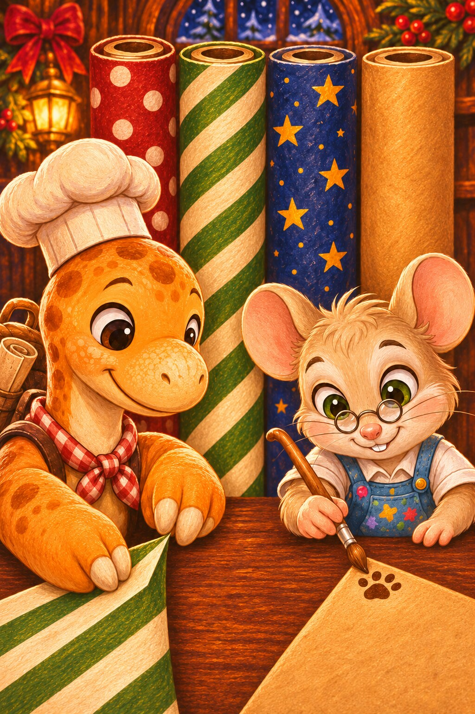
Page 5 of 30
Dough Mino wrapped two of the presents. He folded the ends into neat, sharp points, the way he always did.
Vincent wrapped the other two. He tucked the ends in flat and dabbed a tiny painted paw print on each one, the way he always did.
The four papers were red with white dots, green and white stripes, blue with gold stars, and plain brown paper tied with green string.
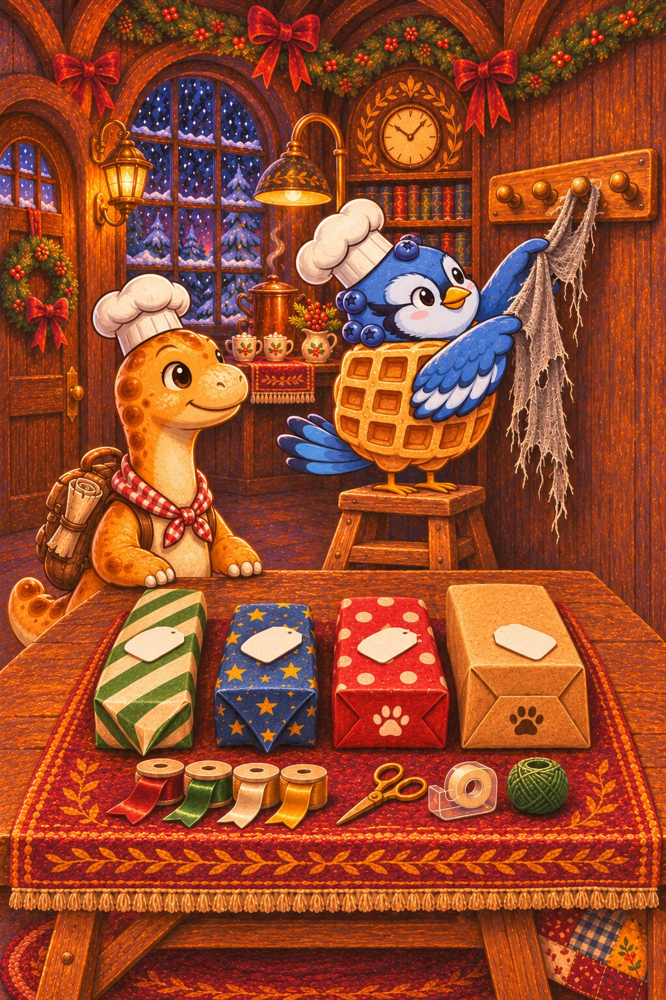
Page 6 of 30
Vincent laid each painted tag on top of its parcel, ready to tie on when the paint was dry.
An owl for Hooten. A hen for Hen-Berry. A pig for Pork-ulele. A ladybird for Luckybug.
Belgian-Waffle swooped in from his first round of deliveries, hung his old scarf on the peg to dry, and swooped out again. Dough Mino looked at the scarf for a long time. It was very frayed.
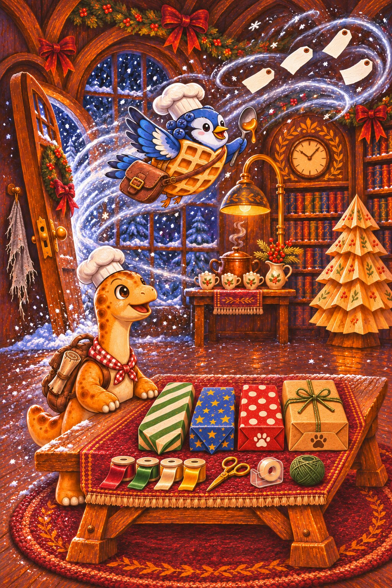
Page 7 of 30
Chapter Two: The Gust
At nine o’clock, the library door burst open.
“Second round!” shouted Belgian-Waffle, and a gust of snowy wind came in with him.
Four painted tags lifted off four parcels, whirled up into the air like leaves, and scattered all over the hall.
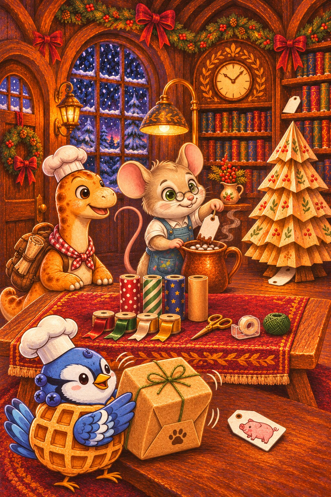
Page 8 of 30
They found the tags under the paper tree, on the bookshelves and in the cocoa jug. Not one was damaged.
But now nobody knew which tag belonged on which parcel.
“Easy!” said Belgian-Waffle. He picked up the plain brown parcel and shook it. Chink, chink. “It jingles! It’s Pork-ulele’s!” He grabbed the pig tag.
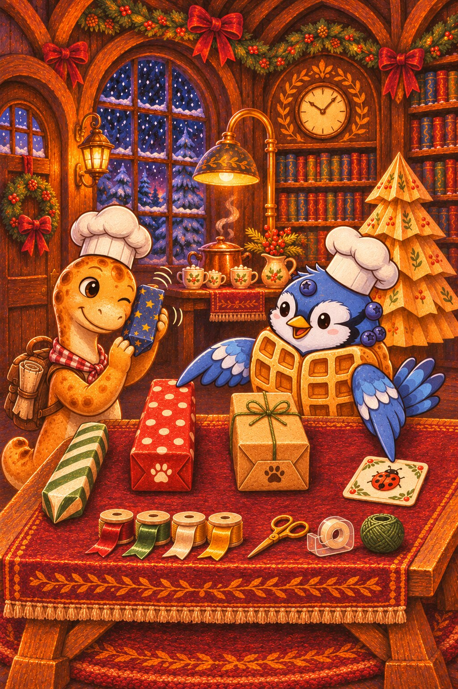
Page 9 of 30
“Wait,” said Dough Mino. He picked up the blue parcel with gold stars and shook it gently.
Ching, ching.
“Two of them jingle,” he said.
“Oh,” said Belgian-Waffle. “Well, then, the red one with white spots must be Luckybug’s. Because she’s red with spots.”
“That’s a guess,” said Dough Mino. “Not a clue. A guess can send the wrong present to the wrong door.”
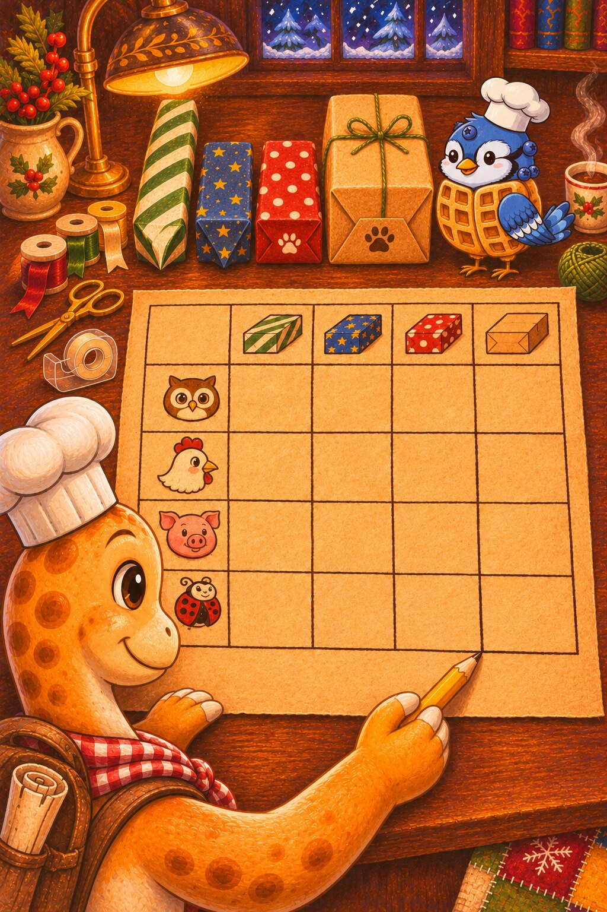
Page 10 of 30
Chapter Three: Clues, Not Guesses
Dough Mino lined the four parcels up in a row. Then he took a big sheet of brown paper and drew a grid on it: the four parcels across the top, and the four friends down the side.
“First,” he said, “what do we actually know?”
They remembered what everyone had said when they brought their presents.
Booklava: Hooten’s present is long. The twins: Hen-Berry’s present is very heavy. Honey-Beats: Pork-ulele’s present jingles. Ted: Luckybug’s going to love it.
“That last one doesn’t help much,” said Belgian-Waffle.
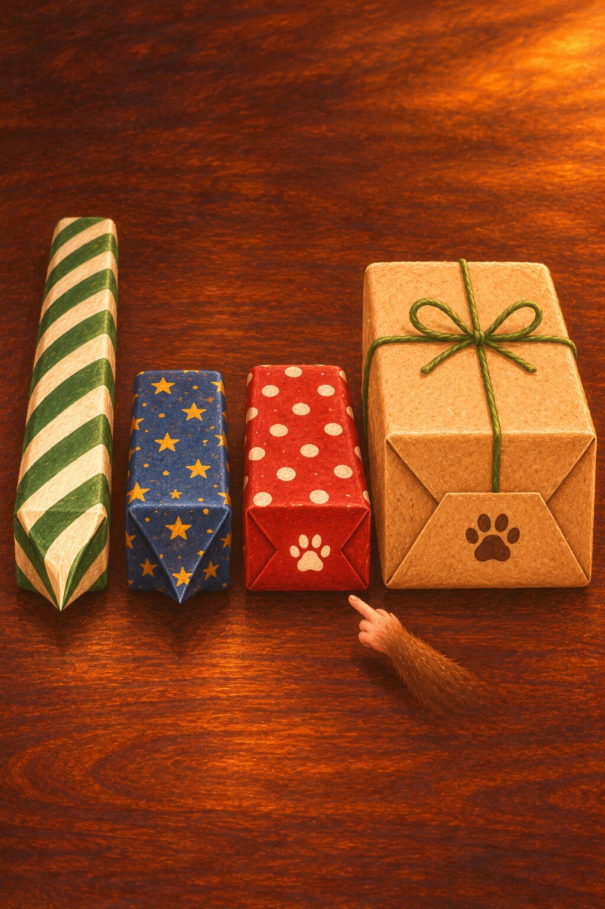
Page 11 of 30
“I know something,” said Vincent. “I wrapped Luckybug’s present myself. So it’s got my paw print on it.”
They looked at the four parcels. The dots and the plain brown paper had tiny painted paw prints. The stripes and the stars had Dough Mino’s sharp, pointed ends.
“So Luckybug’s is the dots or the plain brown one,” said Dough Mino. He made a mark on the grid.
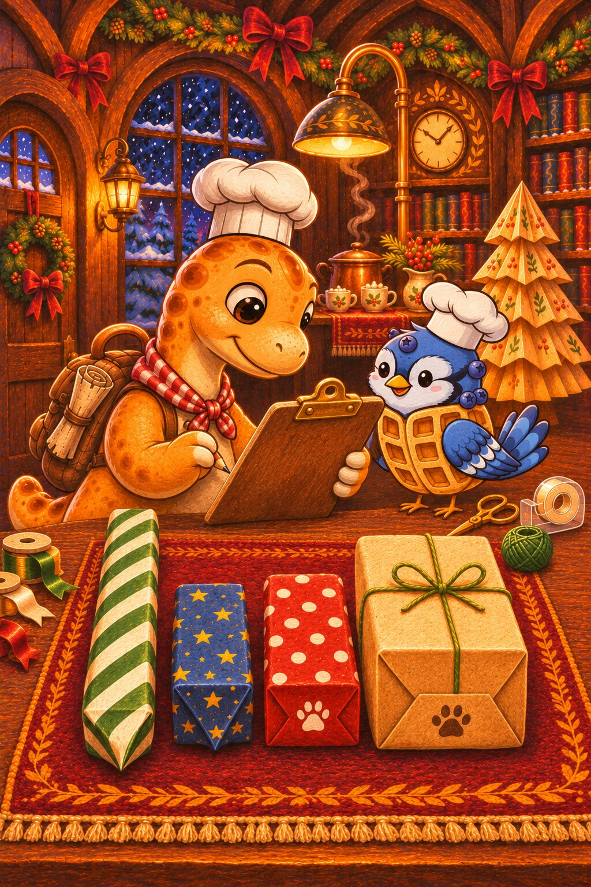
Page 12 of 30
“Now we test,” said Dough Mino. “Shape first.”
Three of the parcels were boxes. Only one was long and thin: the green and white stripes.
“Hooten’s present is long,” said Vincent.
“And only one parcel is long,” said Dough Mino. He drew a tick on the grid. “Stripes for Hooten.”
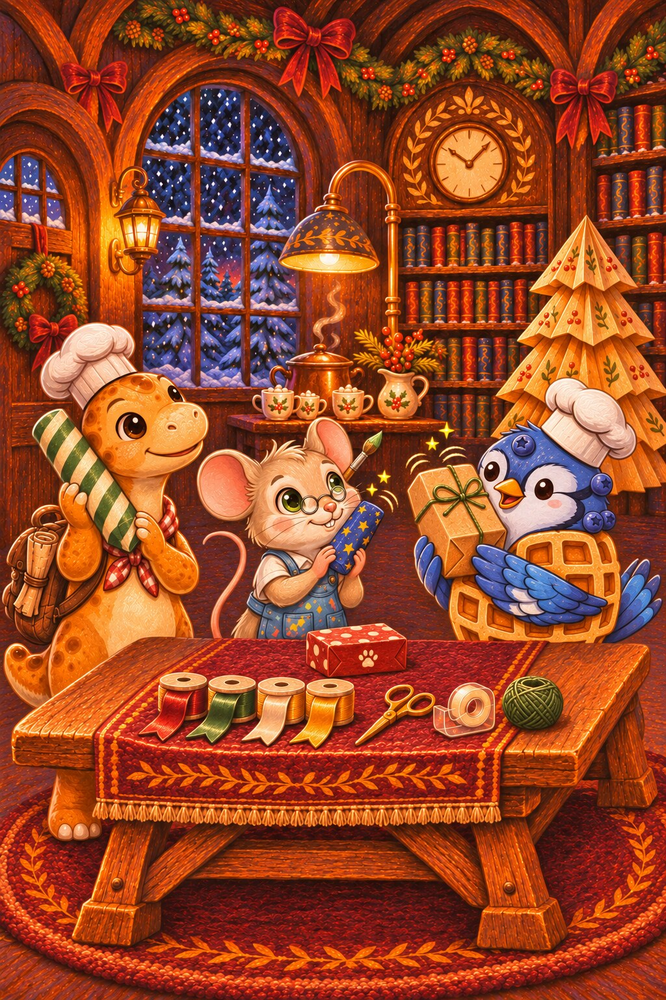
Page 13 of 30
“Sound next.”
Each of them shook each parcel gently, holding it close to an ear. The stripes made no sound. The dots made no sound. The stars went ching, ching. The plain brown parcel went chink, chink, a little lower.
“Pork-ulele’s jingles,” said Belgian-Waffle. “So it’s the stars or the brown one. Still two.”
“Still two,” agreed Dough Mino. “So we need one more test.”
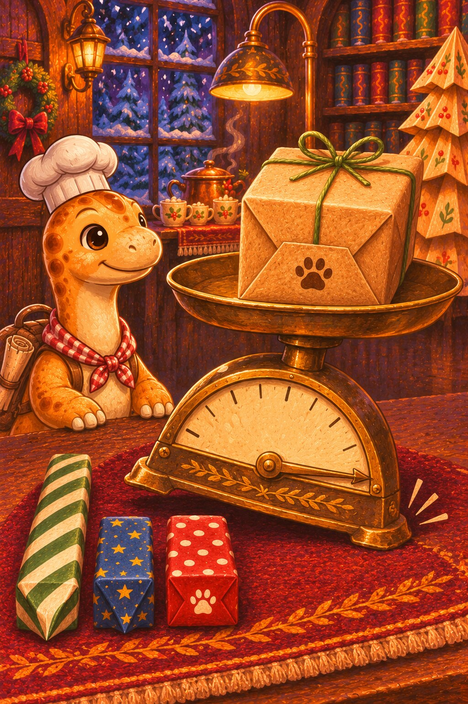
Page 14 of 30
In the corner of the library stood Professor Hooten’s old brass scale, the one he used for weighing books before they went in the post.
They weighed every parcel, one after another.
The stars were light. The dots were light. The stripes were a bit heavier. And the plain brown parcel was so heavy that the scale went clunk all the way down.
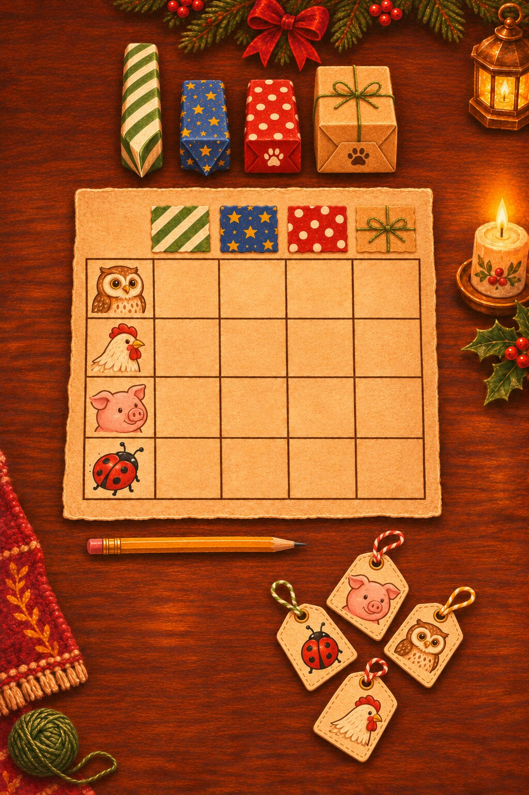
Page 15 of 30
Dough Mino put down his pencil.
Your turn. You know what everyone said, and you’ve seen all three tests. Which parcel is Hen-Berry’s? Which is Pork-ulele’s? And which is Luckybug’s? Work it out before you turn the page.
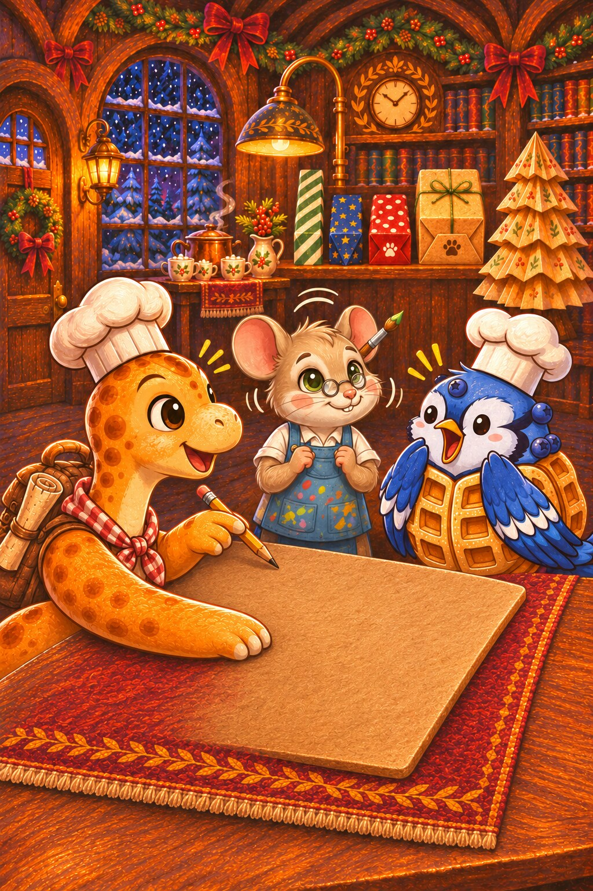
Page 16 of 30
“The plain brown parcel is by far the heaviest,” said Dough Mino. “Hen-Berry’s present is very heavy. So the brown one is Hen-Berry’s.”
“But it jingles!” said Belgian-Waffle.
“Lots of heavy things jingle,” said Vincent.
“Then Pork-ulele’s jingly present must be the stars,” said Dough Mino. “And Luckybug’s has a paw print, so it’s the dots or the brown. The brown is Hen-Berry’s. So the dots are Luckybug’s.”
Belgian-Waffle stared. “So the red spotty one WAS Luckybug’s!”
“Yes,” said Dough Mino. “But now we know.”
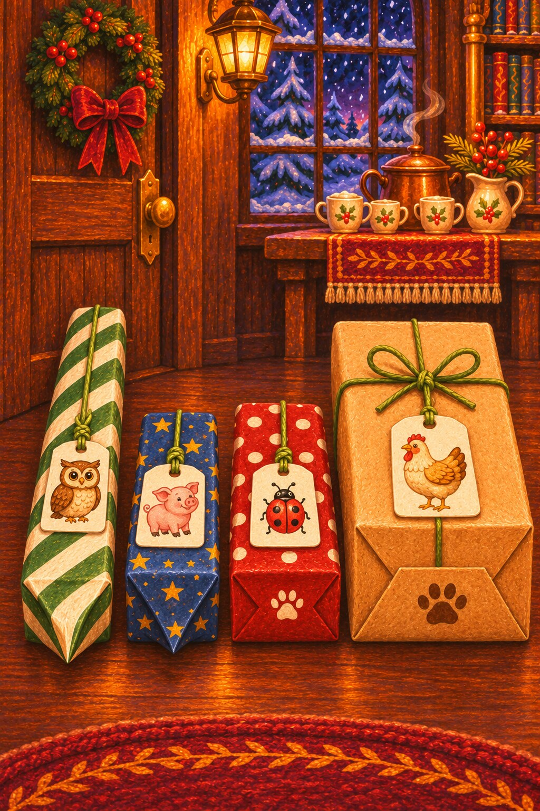
Page 17 of 30
They tied every tag on with a double knot. The owl on the stripes. The hen on the plain brown paper. The pig on the stars. The ladybird on the dots.
Dough Mino lined the four parcels up in a row by the door, in the order of the delivery route. It was the neatest row he had ever made.
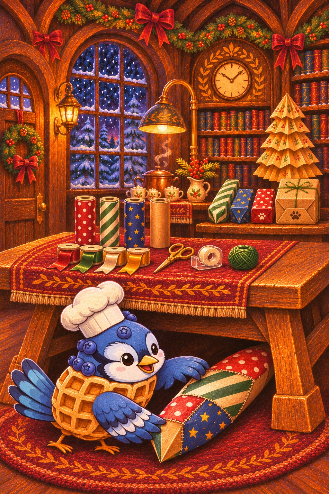
Page 18 of 30
Chapter Four: The Fifth Parcel
“Hang on,” said Belgian-Waffle. He was peering under the table. “There’s another one.”
He pulled out a fifth parcel. It was wrapped in a patchwork of little pieces: red with dots, green with stripes, blue with stars and plain brown, all fitted together like a puzzle. Its ends were folded into sharp points.
It had no tag at all.
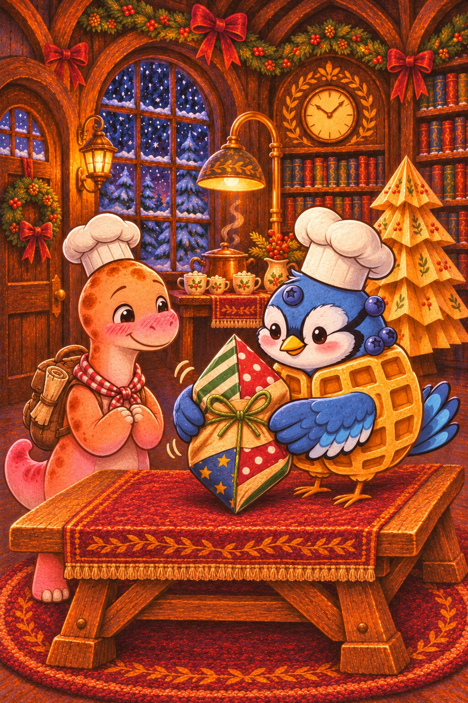
Page 19 of 30
“A mystery!” said Belgian-Waffle. “Pointed ends, so Dough Mino wrapped it. Let’s test it!”
He shook it. Not a sound. He squeezed it. It was soft. He weighed it. It was hardly heavier than nothing.
“So who’s it for?” he said.
Dough Mino had gone pink from his nose to the tip of his tail. “That one,” he said, “is not part of the puzzle.”
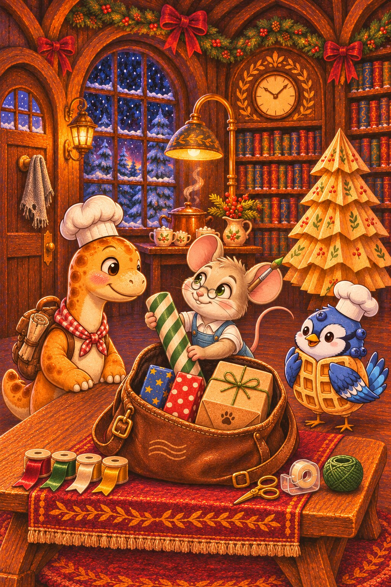
Page 20 of 30
Vincent looked at Dough Mino’s pink face. He looked at the patchwork parcel. He looked at the frayed old scarf on the peg.
“Some parcels aren’t puzzles,” said Vincent. “They’re surprises. And you’ve got four deliveries to make before morning, Belgian-Waffle.”
He loaded the four tagged parcels into the post bag, and he didn’t look at the fifth one again.
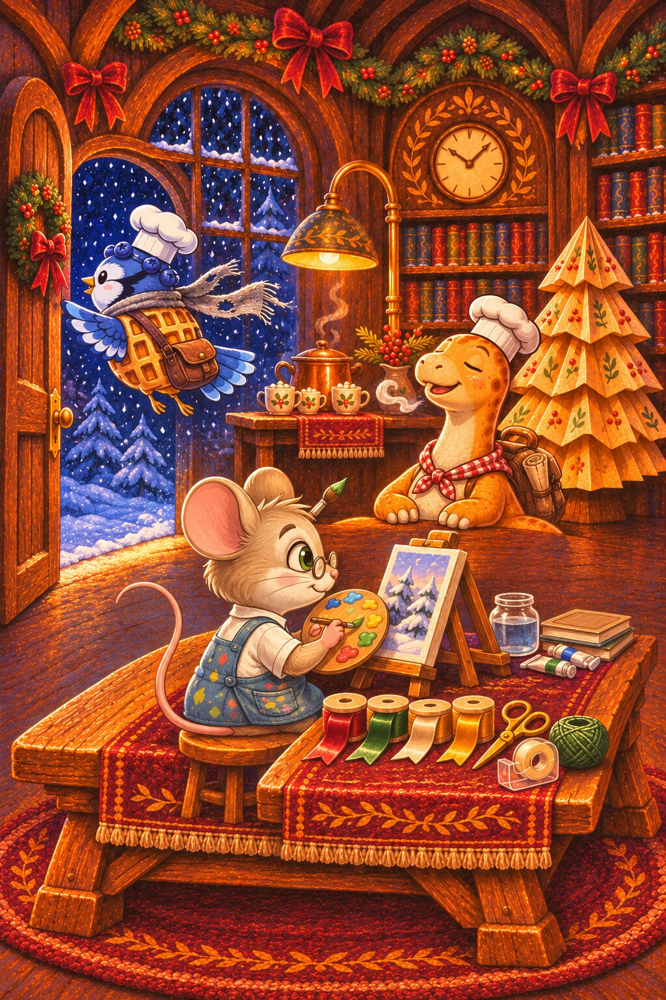
Page 21 of 30
Belgian-Waffle put on his old frayed scarf, hitched up the heavy bag, and flew out into the snowy night.
Behind him, in the warm library, Dough Mino let out a very long breath.
“Thank you,” he said.
“I didn’t see anything,” said Vincent, and went back to his painting.
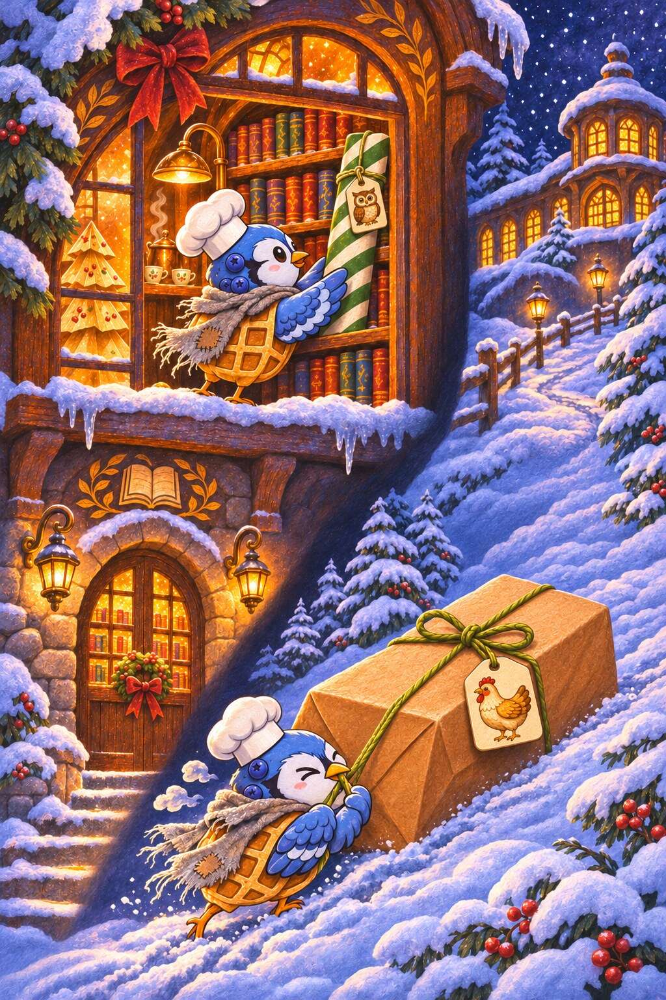
Page 22 of 30
Chapter Five: Deliveries
Belgian-Waffle flew through the falling snow.
At the library’s top window, he left the long striped parcel with the owl tag. Then he dragged the heavy brown parcel, chink, chink, all the way up Hen-Berry’s path and left it on her mat.
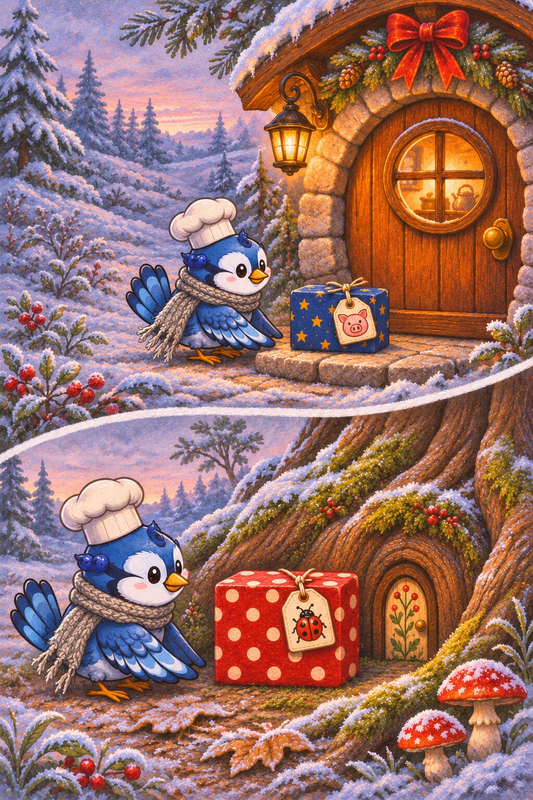
Page 23 of 30
At Pork-ulele’s door, he set down the starry parcel very gently, so it hardly jingled at all.
At Luckybug’s house, which was very small, he had to leave the dotty parcel beside the door, because it was bigger than the door was.
Then he flew home through the grey of early morning, so tired his wings creaked.
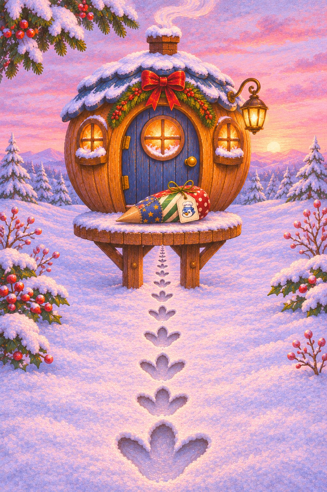
Page 24 of 30
On his own doorstep, in the snow, there was a parcel.
It was patchwork. Red with dots, green with stripes, blue with stars and plain brown, with sharp pointed ends. And now it had a tag: a tiny painting of a bluejay.
Leading away from the step through the snow was a line of big, three-toed footprints.
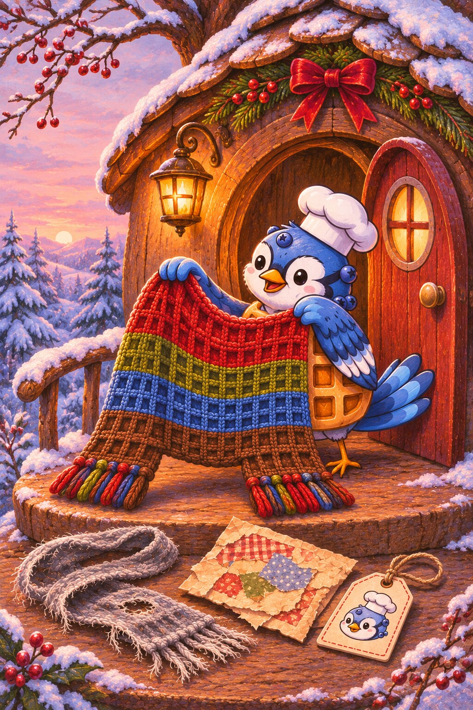
Page 25 of 30
The tag said, in Vincent’s curly writing: Open now. You’ll need it tonight.
So Belgian-Waffle opened it.
Inside was a long, soft scarf, knitted in a pattern of little squares like a waffle. It had stripes of red and green and blue and brown, the very same colours as the four papers.
Page 26 of 30
Chapter Six: The Pattern
Belgian-Waffle looked at the scarf. He looked at the footprints in the snow. Three toes. Very big. Very neat. In a perfectly straight line.
Only one person in the village walked in a perfectly straight line.
He put on the new scarf, and he flew.
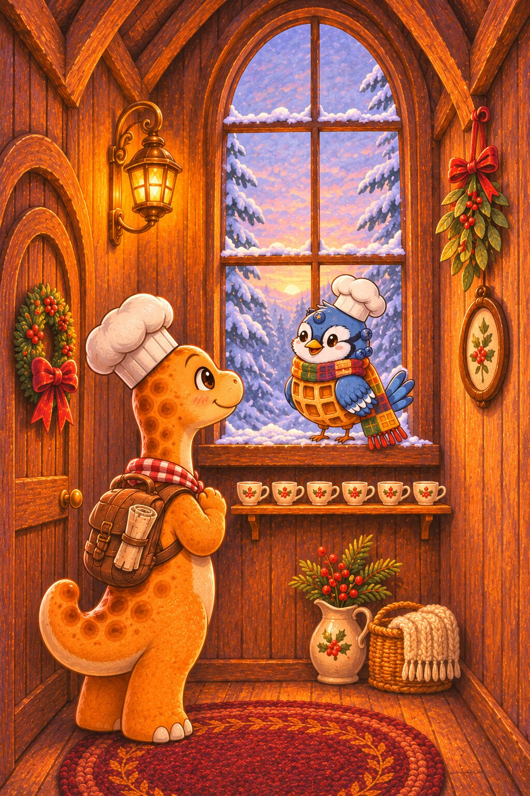
Page 27 of 30
Dough Mino was at home, lining his teacups up on the shelf, when there was a tap at the window.
He opened it. Belgian-Waffle was on the sill, in the patchwork-coloured waffle scarf, with snow on his hat.
“Dough Mino,” he said. “How did you know my size?”
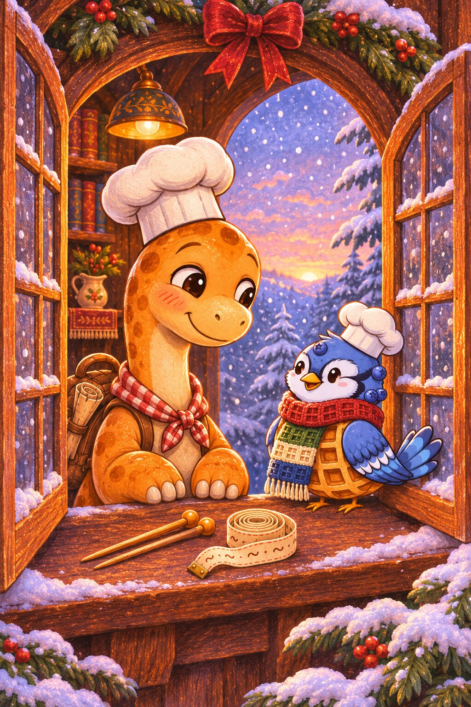
Page 28 of 30
“Knitting is only patterns,” said Dough Mino, “and I like patterns.”
He looked a little shy. “And I measured your old scarf last week, on the library peg, while you were sorting the post. I wrapped it tonight, out of the leftover scraps. I’ve been hiding it under the table all evening.”
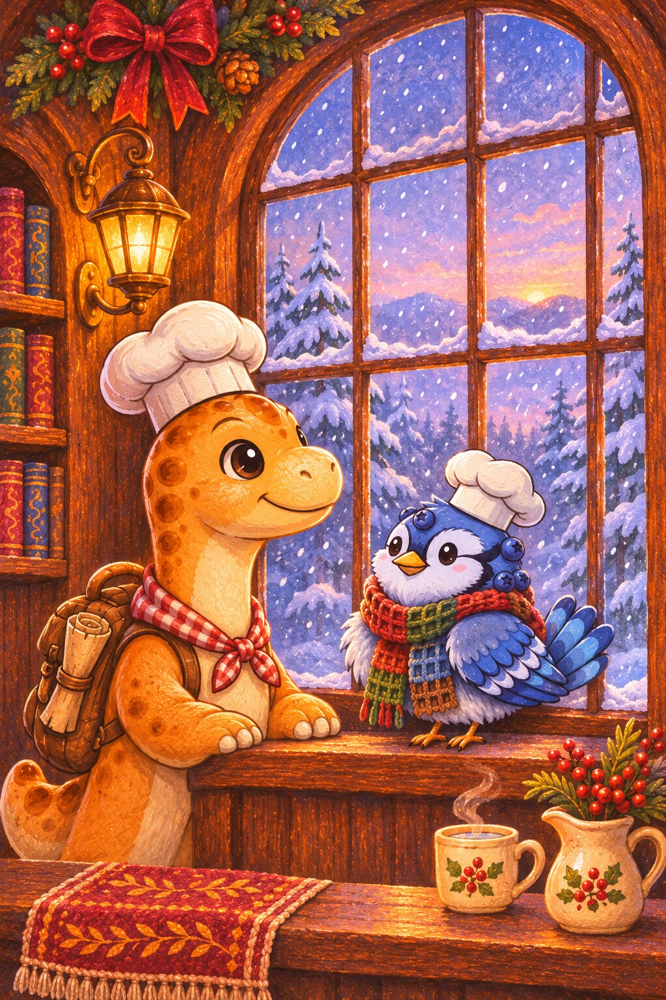
Page 29 of 30
Belgian-Waffle was quiet for a moment.
“Every year, I deliver everybody’s presents,” he said. “And nobody ever delivers anything to me.”
“I know,” said Dough Mino. “That’s why I delivered it myself.”
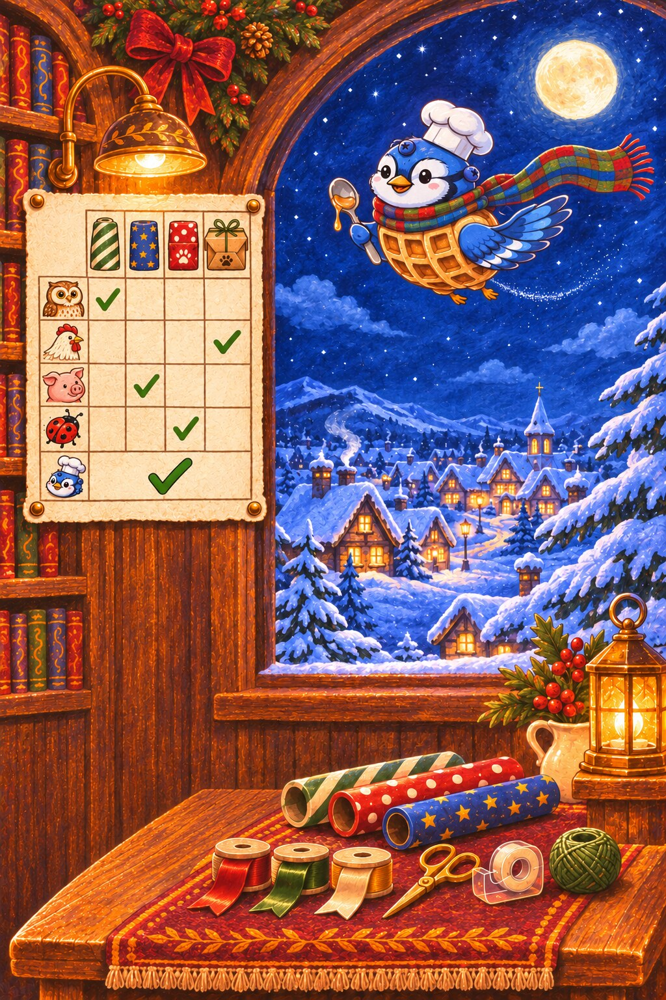
Page 30 of 30
That night was Christmas Eve. Belgian-Waffle flew one last loop over the village, warm all the way to the tips of his wings.
And on the library wall, the puzzle grid was still pinned up, with four neat ticks. Somebody had added a fifth row at the bottom, in very neat writing, with a very small drawing of a bluejay. And beside it, the neatest tick of all.
The end · Thank you for reading
Share another story
A SnackPack original story, free to read online or print.